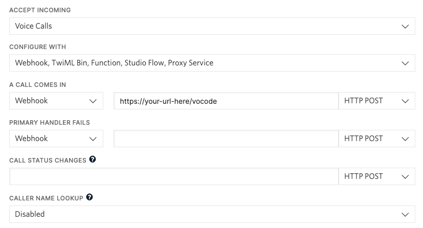

How to use agents with inbound and outbound phone calls.
Vocode supports using agents with inbound and outbound phone calls. You can create custom agents and use them to fullfill a variety of cases like information collection, appointment scheduling, sales, customer support, and more.
telephony_app folder, located at the appsfolder.env.template file and fill in the values
of your API keys. You can easily do so by running the code below:
cp .env.template .env
ngrok: in our code we set it
up to be running on port 3000, run:
ngrok http 3000
.env without https://, e.g.
BASE_URL=asdf1234.ngrok.app
The TelephonyServer is a
server that is responsible for receiving and making phone calls.
The server is built using FastAPI and utilizes Twilio for telephony services.
To set up the server, you would need to clone the Vocode repo or copy the Telephony App directory
Choose one of the following methods to run the server:
telephony_app directory
docker build -t vocode-telephony-app .
docker-compose.
telephony_app directory, run:
docker-compose up
Run the following steps from the telephony_app directory
poetry install
brew services start redis
docker run -dp 6379:6379 -it redis/redis-stack:latest
uvicorn(should be already
installed in step 1).
poetry run uvicorn main:app --port 3000
https://<YOUR BASE URL>/inbound_call -
if you're using ngrok, it looks like
https://asdf1234.ngrok.app/inbound_call

Make sure the server we just set up is already running. Then follow these steps:
outbound_call.py
replace the to_phone with the
number you want to call and the
from_phone with the number you want to call from.
from_phone, you must have
access to it via Twilio (either a number purchased via Twilio or verify the caller ID) see "Setting up an inbound number" above.
poetry run python outbound_call.py.
Both the OutboundCall (in outbound_call.py) and InboundCallConfig (in telephony_app.py) classes can
accept a TranscriberConfig, AgentConfig or SynthesizerConfig - the default transcriber is Deepgram and the default synthesizer is Azure.
This example below sets up an agent that spells every word that is sent to it - any text-in, text-out function can be turned into a voice conversation by subclassing
BaseAgent and creating an AgentFactory.
import typing
from typing import Optional, Tuple
from vocode.streaming.agent.abstract_factory import AbstractAgentFactory
from vocode.streaming.agent.base_agent import BaseAgent, RespondAgent
from vocode.streaming.agent.chat_gpt_agent import ChatGPTAgent
from vocode.streaming.models.agent import AgentConfig, AgentType, ChatGPTAgentConfig
class SpellerAgentConfig(AgentConfig, type="agent_speller"):
pass
class SpellerAgent(RespondAgent[SpellerAgentConfig]):
async def respond(
self,
human_input: str,
conversation_id: str,
is_interrupt: bool = False,
) -> Tuple[Optional[str], bool]:
return "".join(c + " " for c in human_input), False
class SpellerAgentFactory(AbstractAgentFactory):
def create_agent(self, agent_config: AgentConfig) -> BaseAgent:
# If the agent configuration type is CHAT_GPT, create a ChatGPTAgent.
if isinstance(agent_config, ChatGPTAgentConfig):
return ChatGPTAgent(agent_config=agent_config)
# If the agent configuration type is agent_speller, create a SpellerAgent.
elif isinstance(agent_config, SpellerAgentConfig):
return SpellerAgent(agent_config=agent_config)
# If the agent configuration type is not recognized, raise an exception.
raise Exception("Invalid agent config")
An AgentFactory instance is passed into the TelephonyServer in telephony_app.py.
We provide a small set of agents with already created AgentConfigs, including, importantly, one that sets up ChatGPT with a configured prompt:
see our Python Quickstart for more info.
We store the to and from numbers in the ConfigManager - so if you’d like to access them in your agent, you
can instantiate the manager to hook into the same Redis instance:
class SpellerAgent(BaseAgent):
def __init__(self, agent_config: SpellerAgentConfig):
super().__init__(agent_config=agent_config)
self.config_manager = RedisConfigManager()
async def respond(
self,
human_input: str,
conversation_id: str,
is_interrupt: bool = False,
) -> Tuple[Optional[str], bool]:
call_config = self.config_manager.get_config(conversation_id)
if call_config is not None:
from_phone = call_config.twilio_from
to_phone = call_config.twilio_to
return "".join(c + " " for c in human_input), False